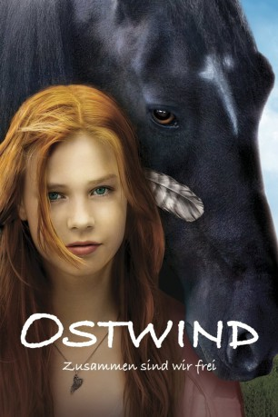

#5605 Ostwind - Zusammen sind wir frei
Alternativ: Ostwind
 
 IMDB-Wertung: 7.0 / 10
IMDB-Wertung: 7.0 / 10  Metascore: 0
Metascore: 0 
Die rebellische Mika wird von ihren Akademiker-Eltern in den Sommerferien zum Straflernen zu ihrer Großmutter Maria geschickt, die ein Pferdegestüt hat. Mika interessiert sich nicht für Pferde, bis sie Ostwind kennenlernt, einen ungezähmten Hengst, der sich den Menschen verweigert. Nur bei Mika wird er sofort zahm und umgänglich. Als die 14-Jährige erfährt, dass ihre Großmutter überlegt, Ostwind zum Pferdeschlächter zu geben, will sie reiten lernen und bei einem Turnier beweisen, dass der Hengst eine zweite Chance verdient hat.
Jahr: 2013
Dauer: 105 Minuten
FSK: 0
Land: Deutschland Studio: Constantin FilmTonspuren:
Untertitel:
Auflösung: 1080p (1920x1040) Größe: 7598 MB
Genre: Familie
Regisseur: Katja von Garnier
Drehbuch: Hiromu Arakawa
Soundtrack:
Darsteller:
 Cornelia Froboess als Maria Kaltenbach
Cornelia Froboess als Maria Kaltenbach Jürgen Vogel als Philipp Schwarz
Jürgen Vogel als Philipp Schwarz- Hanna Binke als Mika
 Marvin Linke als Sam
Marvin Linke als Sam- Tilo Prückner als Herr Kaan
- Nina Kronjäger als Elisabeth Schwarz
- Marla Menn als Michelle
- Henriette Morawe als Tinka
- Amber Bongard als Fanny
 Detlev Buck als Tierarzt Dr. Anders
Detlev Buck als Tierarzt Dr. Anders- Peter Meinhardt als Landestrainer Hessen
- Martin Butzke als Lehrer
- Simone Henn als Sanitäterin
- Neda Rahmanian als Ärztin
- Florentine Morawe als Pferdemädchen 1
- Paula Heinemann als Pferdemädchen 2
- Charline Grassnickeel als Pferdemädchen 3
- Tim Dietrich als Pferdejunge
- Sina Müller als Kleines Mädchen im Zeltlager
- James als Ostwind
- Atila als Ostwind, wild
- Judith Cierpinski als Ärztin , uncredited
- Frank Michael Pretzel als Geschäftsmann , uncredited
Datei: X:\4-Tetralogie(M-Z)\Ostwind\Ostwind - Zusammen sind wir frei (2013, FSK0, 1920x1040).mkv seit 21.02.2017
Festplatte: HD Collection-3(N-Z)-6(A-Z)
 Es gibt insgesamt 7 Filme in der Gruppe '4-Tetralogie(M-Z)\Ostwind'
Es gibt insgesamt 7 Filme in der Gruppe '4-Tetralogie(M-Z)\Ostwind'